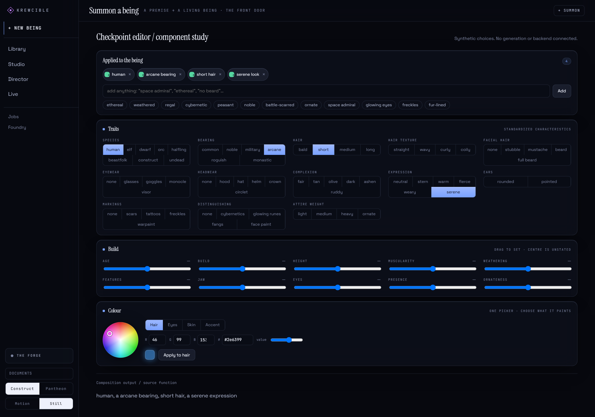

Editor component study / initial recorded state01 / Choices
Make every choice reversible.
I wanted a character workspace where choices stay visible and can be taken back.
Krewcible / Personal project
The editor keeps a character’s choices visible and writes them out as one sentence before anything would be generated.
01 / Choices
I wanted a character workspace where choices stay visible and can be taken back.
02 / Change
The recorded sequence removes arcane bearing while keeping the other choices available.
Initial recorded choice / original component study
Arcane bearing Removed in the recorded change
03 / Composition
The study’s eight active modifications combine four trait choices, one presence setting, one accent colour and two written refinements.
Recorded component study / September 19, 2026
04 / Exclusion
“No heavy armor” remains one of the eight active modifications. The saved study preserves the original compose output, including its grammatical slip.
Recorded study / generation and saving untested
Original public case detail / retained with its evidence limits

The larger Krewcible idea is a workstation for characters, scenes and assets across 2D, 3D and video work. This page covers only the editor.
The editor puts its written description together from the listed choices by fixed rules, so the same choices always give the same sentence. The four parts of the screen above:
The panel as a whole, where trait buttons, build sliders and typed entries are gathered into one request.
A modification stack shows the active choices, each one removable.
One picker paints the hair, eyes, skin or an accent, and shows the exact color value.
The app screen this editor belongs to. The sidebar lists Krewcible’s other sections.
At the start and at the end of the recording, the written description reads:
Krewcible’s screens are dark blue-black. The headings are a large serif, the controls are small and tight, and small capital labels explain what each panel does. In these captures, orange marks the one choice that has been excluded.
Three steps through the recording, from the first four traits to the finished request.
The first state has four traits, including short hair and arcane bearing. Each one sits in the list at the top of the editor, with a button to remove it.
In the recording, long hair replaces short hair and goggles go on. A field notebook and “no heavy armor” are typed in, a teal accent is applied and presence goes up. Last, arcane bearing comes off.
The final list has four trait choices, a presence setting, an accent color and two typed entries. “No heavy armor” counts as one of those eight choices.
For this study, prepared on 19 September 2026, the editor’s controls ran apart from the rest of the app with made-up choices (hair, gear, bearing, a color), and a 36-second recording shows it. The list went from four choices to eight, one was removed along the way, and the written description followed each change. Until that removal the description read “a arcane bearing”. The slip comes from the app’s own code and was left as it happened.
Both captures show the same controls: thirteen trait groups, ten build sliders and the color picker. A typed “no heavy armor” becomes a crossed-out exclusion, and the description turns it into “without heavy armor”.
Study scope: editor controls and description composition. Generation and saving remain untested.
The raw record (JSON) lists the date, the before and after counts, the recording length, the scope and the known slip.